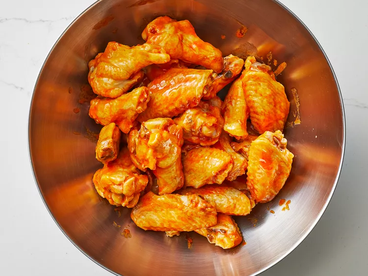

Buffalo Chicken Wing Sauce

Description:
If you know someone from Buffalo, they know someone who told them the secret ingredients to the Anchor Bar's famous Buffalo chicken wings.
I know people from Buffalo. This is my version of Buffalo sauce, as described to me many years ago, over almost as many beers.
Ingredients
- ⅔ cup hot pepper sauce (such as Frank's RedHot)
- ½ cup cold unsalted butter
- 1 ½ tablespoons white vinegar
- ¼ teaspoon Worcestershire sauce
- ¼ teaspoon cayenne pepper
- ⅛ teaspoon garlic powder
- salt to taste
Steps
- Gather all ingredients.
- Combine hot sauce, butter, vinegar, Worcestershire sauce, cayenne, garlic powder, and salt in a pot over medium heat. Bring to a simmer while stirring with a whisk.
- As soon as the liquid begins to bubble on the sides of the pot, remove from heat, stir with the whisk, and set aside for use.
- Enjoy!
Return to main page